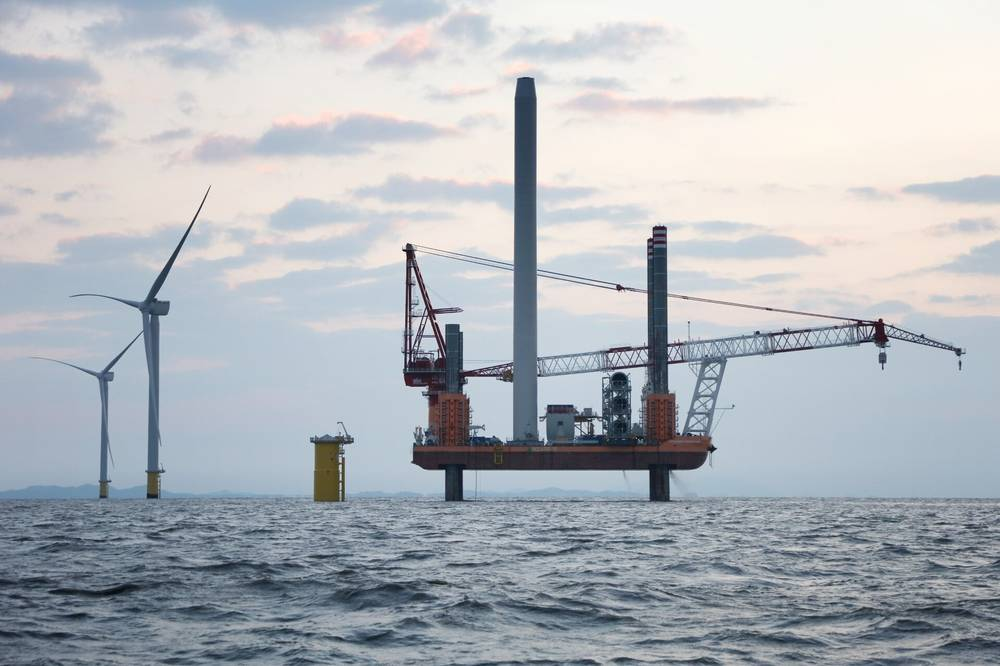

"반도체 기다리는 동안 재생에너지 일감으로 지역 기업 살려야"…전남광주 에너지공사 서둘러 세우자는 제안

이순형 동신대 특임교수 기고…50GW 더 깔 재생에너지 투자 250조 원 추산, 연도별 발주 시간표·지역 공동도급·인력 양성 주문
호남 반도체 클러스터가 지역 건설·전기 업체에 당장 일감을 주기 어려운 만큼, 그 사이를 재생에너지 사업으로 메우고 이를 이끌 에너지공사를 서둘러 세워야 한다는 제안이 나왔다. 이순형 동신대학교 전기공학과 특임교수는 14일 기고에서 전남광주특별시가 재생에너지 개발에 공공 지분으로 참여해 지역 기업의 참여 조건을 직접 정해야 한다고 밝혔다.
이 교수는 지난해 광주의 전문건설 실적이 18%, 옛 전남이 15% 줄었고, 반도체 공장은 보안과 정밀 공법 때문에 대기업 계열 건설사와 기존 협력사가 짓는 탓에 지역 몫이 크지 않다고 짚었다. 반면 현재 7GW 남짓인 지역 재생에너지 설비에 2030년까지 태양광 약 10GW, 2035년까지 해상풍력 30GW, 2038년까지 부유식 풍력 10GW 등 50GW를 더해야 하고, 여기에 드는 투자를 250조 원 안팎으로 추산했다. 신안 해상풍력 집적화단지 3.2GW에 민자 20조 원이 든다는 점이 근거다.
그는 재생에너지가 시·군마다 수천 개 현장으로 나뉘고 20년 넘는 유지보수 일감이 지역에 남는다는 점에서 지역 기업에 더 가까운 시장이라고 설명했다. 다만 터빈·케이블·설치선이 모두 외부에서 오면 투자는 지역을 지나갈 뿐이라며 50GW의 연도별 발주 시간표 공개, 공공 주도 발전·계통·항만 공사의 지역 공동도급 확대, 지역 대학·직업학교의 전기·용접·해상 인력 양성을 제안했다.
시민에너지 관점
독일의 슈타트베르케(도시 공기업)와 덴마크의 지역 소유 풍력은 공공과 주민이 지분을 가질 때 투자 이익이 지역에 남는다는 것을 보여 줬다. 250조 원 규모의 재생에너지 투자가 외부 자본의 배당으로 빠져나가면 지역에는 설비와 송전탑만 남는다. 에너지공사가 발주자가 된다면 지역 기업뿐 아니라 주민·협동조합 출자 몫과 햇빛·바람 이익공유도 처음부터 사업 조건에 넣어야 한다. 전남광주특별시는 공사 설립 조례에 시민 출자와 지역 소유 비율을 명시하기 바란다.
출처: 디딤코리아(제이앤앤뉴스 제공) 2026-11-14 이순형(동신대 전기공학과 특임교수, 기고)·등록 박송엽 원문 보기
「半導体を待つ間、再エネの仕事で地元企業を生かすべき」…全南光州エネルギー公社の早期設立を提案
李舜衡・東新大特任教授が寄稿…50GW追加の再エネ投資は250兆ウォンと推計、年度別発注スケジュール・地域共同受注・人材育成を求める
湖南半導体クラスターが地元の建設・電気業者にすぐには仕事をもたらしにくい以上、その間を再生可能エネルギー事業で埋め、それを率いるエネルギー公社を急いで設立すべきだとの提案が出た。東新大学電気工学科の李舜衡（イ・スンヒョン）特任教授は14日の寄稿で、全南光州特別市が再エネ開発に公共持ち分で参加し、地元企業の参加条件を自ら決めるべきだと述べた。
李教授は、昨年の光州の専門建設実績が18％、旧全羅南道が15％減ったうえ、半導体工場は保安や精密工法の関係で大企業系列の建設会社と既存の協力会社が建てるため地元の取り分は大きくないと指摘した。一方、現在7GW余りの地域の再エネ設備に、2030年までに太陽光約10GW、2035年までに洋上風力30GW、2038年までに浮体式風力10GWの計50GWを加える必要があり、その投資額を250兆ウォン前後と推計した。新安洋上風力集積化団地3.2GWに民間資金20兆ウォンが必要だという点が根拠だ。
教授は、再エネは市・郡ごとに数千の現場に分かれ、20年を超える保守の仕事が地域に残る点で、地元企業により近い市場だと説明した。ただしタービンやケーブル、設置船がすべて外から来れば投資は地域を素通りするだけだとして、50GWの年度別発注スケジュールの公開、公共主導の発電・系統・港湾工事での地域共同受注の拡大、地元大学・職業学校での電気・溶接・海上人材の育成を提案した。
市民エネルギーの視点
ドイツのシュタットベルケ（都市公社）やデンマークの地域所有風力は、公共と住民が持ち分を持つときに投資の利益が地域に残ることを示してきた。250兆ウォン規模の再エネ投資が外部資本の配当として流出すれば、地域には設備と送電塔だけが残る。エネルギー公社が発注者になるなら、地元企業だけでなく住民・協同組合の出資枠と日差し・風の利益共有も最初から事業条件に入れるべきだ。全南光州特別市は公社設立条例に市民出資と地域所有の比率を明記してほしい。
出典: 디딤코리아(제이앤앤뉴스 제공) 2026-11-14 이순형(동신대 전기공학과 특임교수, 기고)·등록 박송엽 原文を読む
"等待半导体期间，先用可再生能源订单救活本地企业"…建议尽快设立全南光州能源公社
东新大学特任教授李舜衡投稿：新增50GW可再生能源投资估计250万亿韩元，呼吁公布年度发包时间表、扩大地方联合承包、培养人才
有专家建议，既然湖南半导体集群短期内难以给本地建筑和电气企业带来订单，就应先用可再生能源项目填补空档，并尽快设立牵头的能源公社。东新大学电气工程系特任教授李舜衡14日投稿称，全南光州特别市应以公共股份参与可再生能源开发，自行确定本地企业的参与条件。
李教授指出，去年光州的专业建筑业绩减少18%，原全罗南道减少15%；半导体工厂出于保密和精密工艺要求，由大企业旗下建筑公司和既有协作企业承建，本地份额有限。相反，当地可再生能源装机目前约7GW，到2030年还需新增光伏约10GW、到2035年海上风电30GW、到2038年漂浮式风电10GW，合计50GW，他估计所需投资约250万亿韩元，依据是新安海上风电集群3.2GW需民间资金20万亿韩元。
他解释说，可再生能源分散在各市郡数千个现场，且20多年的运维工作会留在当地，因此对本地企业而言是更近的市场。但如果风机、电缆和安装船都来自外地，投资只会从当地"路过"。他建议公布50GW的年度发包时间表，在公共主导的发电、电网和港口工程中扩大地方联合承包，并由本地大学和职业学校提前培养电气、焊接和海上作业人才。
市民能源视角
德国的城市公用事业公司和丹麦的社区所有风电表明，公共部门和居民持有股份时，投资收益才能留在当地。若250万亿韩元规模的可再生能源投资以外部资本分红的形式流出，当地只会留下设备和输电塔。能源公社若成为发包方，不仅要照顾本地企业，还应从一开始就把居民和合作社出资份额以及阳光、风力收益共享写进项目条件。希望全南光州特别市在公社设立条例中明确市民出资和地方所有的比例。
来源: 디딤코리아(제이앤앤뉴스 제공) 2026-11-14 이순형(동신대 전기공학과 특임교수, 기고)·등록 박송엽 查看原文
"Use renewable work to keep local firms alive while waiting for chip fabs": call to fast-track a Jeonnam-Gwangju energy corporation
Dongshin University professor Lee Soon-hyung estimates 250 trillion won for 50 GW of new renewables, urges yearly tender schedules, local joint contracting and workforce training
Because the Honam semiconductor cluster is unlikely to bring work to local construction and electrical firms any time soon, the gap should be filled with renewable energy projects led by a quickly established public energy corporation, according to a proposal published on 14 November. Lee Soon-hyung, a special professor of electrical engineering at Dongshin University, wrote that the Jeonnam-Gwangju Special City should take public equity stakes in renewable development and set the terms for local companies' participation itself.
Lee noted that specialist construction output fell 18% in Gwangju and 15% in the former South Jeolla Province last year, and that chip plants are built by conglomerate-affiliated builders and their long-standing subcontractors for security and precision reasons, leaving little for local firms. By contrast, the region's roughly 7 GW of renewable capacity must grow by about 50 GW — some 10 GW of solar by 2030, 30 GW of offshore wind by 2035 and 10 GW of floating wind by 2038 — which he estimated would require around 250 trillion won, based on the 20 trillion won of private capital needed for the 3.2 GW Sinan offshore wind cluster.
Renewables are a closer market for local firms, he argued, because they are spread over thousands of sites across cities and counties and leave more than 20 years of maintenance work behind. But if turbines, cables and installation vessels all come from outside, the investment will simply pass through. He proposed publishing a year-by-year tender schedule for the 50 GW, expanding local joint contracting in publicly led generation, grid and port works, and training electrical, welding and offshore workers at local universities and vocational schools.
Citizen Energy View
Germany's Stadtwerke and Denmark's locally owned wind turbines show that investment returns stay in a region when the public sector and residents hold equity. If 250 trillion won of renewable investment flows out as dividends to outside capital, the region is left with only equipment and pylons. If an energy corporation becomes the commissioning body, it should build in not only local contractors but also shares for residents and cooperatives and the sharing of solar and wind income from the start. Jeonnam-Gwangju should write citizen investment and local ownership ratios into the ordinance that creates the corporation.
Source: 디딤코리아(제이앤앤뉴스 제공) 2026-11-14 이순형(동신대 전기공학과 특임교수, 기고)·등록 박송엽 Read the original